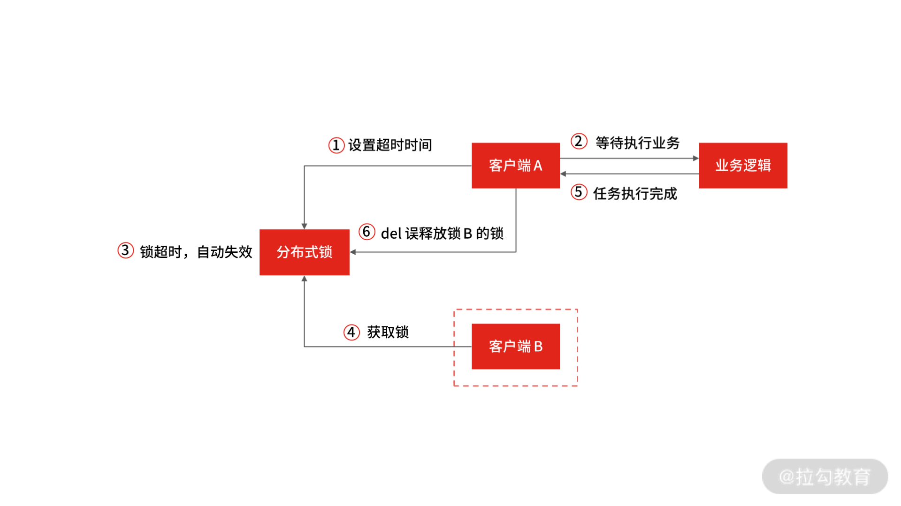

- 00 开篇词 中高级研发面试，逃不开架构设计这一环.md.html
- 01 研发工程师想提升面试竞争力，该具备这三个技术认知.md.html
- 02 研发工程师如何用架构师视角回答架构设计方案？.md.html
- 03 面试官如何考察与 CAP 有关的分布式理论？.md.html
- 04 亿级商品存储下，如何深度回答分布式系统的原理性问题？.md.html
- 05 海量并发场景下，如何回答分布式事务一致性问题？.md.html
- 06 分布式系统中，如何回答锁的实现原理？.md.html
- 07 RPC：如何在面试中展现出“造轮子”的能力？.md.html
- 08 MQ：如何回答消息队列的丢失、重复与积压问题.md.html
- 08 案例串联 如何让系统抗住双十一的预约抢购活动？.md.html
- 09 如何回答 MySQL 的索引原理与优化问题？.md.html
- 10 如何回答 MySQL 的事务隔离级别和锁的机制？.md.html
- 11 读多写少：MySQL 如何优化数据查询方案？.md.html
- 12 写多读少：MySQL 如何优化数据存储方案？.md.html
- 13 缓存原理：应对面试你要掌握 Redis 哪些原理？.md.html
- 14 缓存策略：面试中如何回答缓存穿透、雪崩等问题？.md.html
- 15 如何向面试官证明你做的系统是高可用的？.md.html
- 16 如何从架构师角度回答系统容错、降级等高可用问题？.md.html
- 17 如何向面试官证明你做的系统是高性能的？.md.html
- 18 如何从架构师角度回答怎么应对千万级流量的问题？.md.html
- 19 彩蛋 互联网架构设计面试，你需要掌握的知识体系.md.html
- 结束语 程序员的道、术、势.md.html
- 捐赠
06 分布式系统中，如何回答锁的实现原理？
上一讲，我讲了分布系统的事务一致性，今天这一讲，我想带你了解分布式系统中与锁有关的面试问题。
案例背景
分布式锁是解决协调分布式系统之间，同步访问共享资源的一种方式。详细来讲：在分布式环境下，多个系统在同时操作共享资源（如写数据）时，发起操作的系统通常会通过一种方式去协调其他系统，然后获取访问权限，得到访问权限后才可以写入数据，其他系统必须等待权限释放。

分布式锁
我和其他的面试官交流后发现，很多面试官都会问候选人与分布式锁相关的问题，在一些细节上挖得还比较细。比如在分布式系统中涉及共享资源的访问，一些面试官会深挖如何控制并发访问共享资源；如何解决资源争抢等技术细节，这些问题在下单场景、优惠券场景都会被考察到，足以证明“分布式锁”考点的重要性。
那么假设你正在面试，面试官模拟了系统秒杀的场景：为了防止商品库存超售，在并发场景下用到了分布式锁的机制，做商品扣减库存的串行化操作。然后问你：“你如何实现分布式锁？”你该怎么回答呢？
案例分析
当你听到这个问题后，心里会不会窃喜？觉得这是一道送分题，因为可选方案有很多，比如：
- 基于关系型数据库 MySQL 实现分布式锁；
- 基于分布式缓存 Redis 实现分布式锁；
你从中选择一个熟悉的实现方式，然后和面试官展开拉锯式的问答环节。
你：“可以基于 Redis 的 setnx 命令来实现分布式锁。” 面试官：“当拿到锁的服务挂掉，如何防止死锁？” 你：“可以为锁设置一个过期时间。” 面试官：“那如何保证加锁和设置过期时间是原子操作？” ……
如果面试官觉得你回答问题的思路清晰有条理，给出的实现方案也可以落地，并且满足你的业务场景，那么他会认可你具备初中级研发工程师该具备的设计能力，但不要高兴得太早。
因为有些面试官会继续追问：“分布式锁用 Zookeeper 实现行不行？”，“分布式锁用 etcd 实现行不行？” 借机考察你对分布式协调组件的掌握。你可能会觉得开源组件那么多，自己不可能每一个都用过，答不出来也无妨。但面试官提问的重点不是停留在组件的使用上，而是你对分布式锁的原理问题的掌握程度。
换句话说，“如果让借助第三方组件，你怎么设计分布式锁？” 这背后涉及了分布式锁的底层设计逻辑，是你需要掌握的。
02 讲我提到，在给出方案之前，你要明确待解决的问题点是什么。虽然你可以借助数据库 DB、Redis 和 ZooKeeper 等方式实现分布式锁，但要设计一个分布式锁，就需要明确分布式锁经常出现哪些问题，以及如何解决。
- 可用问题：无论何时都要保证锁服务的可用性（这是系统正常执行锁操作的基础）。
- 死锁问题：客户端一定可以获得锁，即使锁住某个资源的客户端在释放锁之前崩溃或者网络不可达（这是避免死锁的设计原则）。
- 脑裂问题：集群同步时产生的数据不一致，导致新的进程有可能拿到锁，但之前的进程以为自己还有锁，那么就出现两个进程拿到了同一个锁的问题。
总的来说，设计分布式锁服务，至少要解决上面最核心的几个问题，才能评估锁的优劣，从问题本质来回答面试中的提问，以不变应万变。接下来，我就以开篇的 “库存扣减” 为例，带你了解分布式锁的常见实现方式、优缺点，以及方案背后的原理。
案例解答
基于关系型数据库实现分布式锁
基于关系型数据库（如 MySQL） 来实现分布式锁是任何阶段的研发同学都需要掌握的，做法如下：先查询数据库是否存在记录，为了防止幻读取（幻读取：事务 A 按照一定条件进行数据读取，这期间事务 B 插入了相同搜索条件的新数据，事务 A 再次按照原先条件进行读取时，发现了事务 B 新插入的数据 ）通过数据库行锁 select for update 锁住这行数据，然后将查询和插入的 SQL 在同一个事务中提交。
以订单表为例：
select id from order where order_id = xxx for update
基于关系型数据库实现分布式锁比较简单，不过你要注意，基于 MySQL 行锁的方式会出现交叉死锁，比如事务 1 和事务 2 分别取得了记录 1 和记录 2 的排它锁，然后事务 1 又要取得记录 2 的排它锁，事务 2 也要获取记录 1 的排它锁，那这两个事务就会因为相互锁等待，产生死锁。

数据库交叉死锁
当然，你可以通过“超时控制”解决交叉死锁的问题，但在高并发情况下，出现的大部分请求都会排队等待，所以“基于关系型数据库实现分布式锁”的方式在性能上存在缺陷，所以如果你回答“基于关系型数据库 MySQL 实现分布式锁”，通常会延伸出下面两个问题。
- 数据库的事务隔离级别
如果你想让系统支持海量并发，那数据库的并发处理能力就尤为重要，而影响数据库并发能力最重要的因素是数据库的事务隔离机制。
数据库的四种隔离级别从低到高分别是：
- 读未提交（READ UNCOMMITTED）；
- 读已提交（READ COMMITTED）；
- 可重复读（REPEATABLE READ）；
- 可串行化（SERIALIZABLE）。
其中，可串行化操作就是按照事务的先后顺序，排队执行，然而一个事务操作可能要执行很久才能完成，这就没有并发效率可言了，所以数据库隔离级别越高，系统的并发性能就越差。
- 基于乐观锁的方式实现分布式锁
在数据库层面，select for update 是悲观锁，会一直阻塞直到事务提交，所以为了不产生锁等待而消耗资源，你可以基于乐观锁的方式来实现分布式锁，比如基于版本号的方式，首先在数据库增加一个 int 型字段 ver，然后在 SELECT 同时获取 ver 值，最后在 UPDATE 的时候检查 ver 值是否为与第 2 步或得到的版本值相同。
## SELECT 同时获取 ver 值
select amount, old_ver from order where order_id = xxx
## UPDATE 的时候检查 ver 值是否与第 2 步获取到的值相同
update order set ver = old_ver + 1, amount = yyy where order_id = xxx and ver = old_ver
此时，如果更新结果的记录数为1，就表示成功，如果更新结果的记录数为 0，就表示已经被其他应用更新过了，需要做异常处理。
你可以看到，初中级的研发工程师除了要掌握如何基于关系型数据库实现分布式锁，还要提前掌握数据库隔离级别的相关知识点，以及锁机制，它们是 MySQL 知识体系的一环，我会在第 10 讲中帮你梳理“如何回答 MySQL 的事务隔离级别和锁的机制？”相关问题。
基于分布式缓存实现分布式锁
我在开篇提到，因为数据库的性能限制了业务的并发量，所以针对“ 618 和双 11 大促”等请求量剧增的场景，你要引入基于缓存的分布式锁，这个方案可以避免大量请求直接访问数据库，提高系统的响应能力。
基于缓存实现的分布式锁，就是将数据仅存放在系统的内存中，不写入磁盘，从而减少 I/O 读写。接下来，我以 Redis 为例讲解如何实现分布式锁。
在加锁的过程中，实际上就是在给 Key 键设置一个值，为避免死锁，还要给 Key 键设置一个过期时间。
SET lock_key unique_value NX PX 10000
- lock_key 就是 key 键；
- unique_value 是客户端生成的唯一的标识；
- NX 代表只在 lock_key 不存在时，才对 lock_key 进行设置操作；
- PX 10000 表示设置 lock_key 的过期时间为 10s，这是为了避免客户端发生异常而无法释放锁。
而解锁的过程就是将 lock_key 键删除，但不能乱删，要保证执行操作的客户端就是加锁的客户端。而这个时候， unique_value 的作用就体现出来，实现方式可以通过 lua 脚本判断 unique_value 是否为加锁客户端。
选用 Lua 脚本是为了保证解锁操作的原子性。因为 Redis 在执行 Lua 脚本时，可以以原子性的方式执行，从而保证了锁释放操作的原子性。
// 释放锁时，先比较 unique_value 是否相等，避免锁的误释放
if redis.call("get",KEYS[1]) == ARGV[1] then
return redis.call("del",KEYS[1])
else
return 0
end
以上，就是基于 Redis 的 SET 命令和 Lua 脚本在 Redis 单节点上完成了分布式锁的加锁、解锁，不过在实际面试中，你不能仅停留在操作上，因为这并不能满足应对面试需要掌握的知识深度， 所以你还要清楚基于 Redis 实现分布式锁的优缺点；Redis 的超时时间设置问题；站在架构设计层面上 Redis 怎么解决集群情况下分布式锁的可靠性问题。
需要注意的是，你不用一股脑全部将其说出来，而是要做好准备，以便跟上面试官的思路，同频沟通。
- 基于 Redis 实现分布式锁的优缺点
基于数据库实现分布式锁的方案来说，基于缓存实现的分布式锁主要的优点主要有三点。
- 性能高效（这是选择缓存实现分布式锁最核心的出发点）。
- 实现方便。很多研发工程师选择使用 Redis 来实现分布式锁，很大成分上是因为 Redis 提供了 setnx 方法，实现分布式锁很方便。但是需要注意的是，在 Redis2.6.12 的之前的版本中，由于加锁命令和设置锁过期时间命令是两个操作（不是原子性的），当出现某个线程操作完成 setnx 之后，还没有来得及设置过期时间，线程就挂掉了，就会导致当前线程设置 key 一直存在，后续的线程无法获取锁，最终造成死锁的问题，所以要选型 Redis 2.6.12 后的版本或通过 Lua 脚本执行加锁和设置超时时间（Redis 允许将 Lua 脚本传到 Redis 服务器中执行, 脚本中可以调用多条 Redis 命令，并且 Redis 保证脚本的原子性）。
- 避免单点故障（因为 Redis 是跨集群部署的，自然就避免了单点故障）。
当然，基于 Redis 实现分布式锁也存在缺点，主要是不合理设置超时时间，以及 Redis 集群的数据同步机制，都会导致分布式锁的不可靠性。
- 如何合理设置超时时间
通过超时时间来控制锁的失效时间，不太靠谱，比如在有些场景中，一个线程 A 获取到了锁之后，由于业务代码执行时间可能比较长，导致超过了锁的超时时间，自动失效，后续线程 B 又意外的持有了锁，当线程 A 再次恢复后，通过 del 命令释放锁，就错误的将线程 B 中同样 key 的锁误删除了。

锁超时导致的误操作
所以，如果锁的超时时间设置过长，会影响性能，如果设置的超时时间过短，有可能业务阻塞没有处理完成，能否合理设置超时时间，是基于缓存实现分布式锁很难解决的一个问题。
那么如何合理设置超时时间呢？ 你可以基于续约的方式设置超时时间：先给锁设置一个超时时间，然后启动一个守护线程，让守护线程在一段时间后，重新设置这个锁的超时时间。实现方式就是：写一个守护线程，然后去判断锁的情况，当锁快失效的时候，再次进行续约加锁，当主线程执行完成后，销毁续约锁即可。
不过这种方式实现起来相对复杂，我建议你结合业务场景进行回答，所以针对超时时间的设置，要站在实际的业务场景中进行衡量。
- Redis 如何解决集群情况下分布式锁的可靠性？
我在 03 讲中提到了，在回答基于 Redis 实现分布式锁时候，你需要具备的答题思路和扩展点。其中也提到了基于 Redis 集群节点实现分布式锁会存在高可用的问题。
由于 Redis 集群数据同步到各个节点时是异步的，如果在 Redis 主节点获取到锁后，在没有同步到其他节点时，Redis 主节点宕机了，此时新的 Redis 主节点依然可以获取锁，所以多个应用服务就可以同时获取到锁。
但 03 讲我没有说怎么解决这个问题，其实 Redis 官方已经设计了一个分布式锁算法 Redlock 解决了这个问题。
而如果你能基于 Redlock 原理回答出怎么解决 Redis 集群节点实现分布式锁的问题，会成为面试的加分项。那官方是怎么解决的呢？
为了避免 Redis 实例故障导致锁无法工作的问题，Redis 的开发者 Antirez 设计了分布式锁算法 Redlock。Redlock 算法的基本思路，是让客户端和多个独立的 Redis 实例依次请求申请加锁，如果客户端能够和半数以上的实例成功地完成加锁操作，那么我们就认为，客户端成功地获得分布式锁，否则加锁失败。
这样一来，即使有某个 Redis 实例发生故障，因为锁的数据在其他实例上也有保存，所以客户端仍然可以正常地进行锁操作，锁的数据也不会丢失。那 Redlock 算法是如何做到的呢？
我们假设目前有 N 个独立的 Redis 实例， 客户端先按顺序依次向 N 个 Redis 实例执行加锁操作。这里的加锁操作和在单实例上执行的加锁操作一样，但是需要注意的是，Redlock 算法设置了加锁的超时时间，为了避免因为某个 Redis 实例发生故障而一直等待的情况。
当客户端完成了和所有 Redis 实例的加锁操作之后，如果有超过半数的 Redis 实例成功的获取到了锁，并且总耗时没有超过锁的有效时间，那么就是加锁成功。
总结
在课程的最后，我们总结一下，分布式锁是解决多个进程同时访问临界资源的常用方法，在分布式系统中非常普遍，常见的实现方式是基于数据库，基于 Redis。在同等服务器配置下，Redis 的性能是最好的，数据库最差。
但是在面试时，你要分清楚面试官的考查点，并结合工作中的业务场景给出答案，面试官不侧重你是否能很快地给出结果，而是你思考的过程。
对于分布式锁，你要从“解决可用性、死锁、脑裂”等问题为出发点来展开回答各分布式锁的实现方案的优缺点和适用场景。 另外，在设计分布式锁的时候，为了解决可用性、死锁、脑裂等问题，一般还会再考虑一下锁的四种设计原则。
- 互斥性：即在分布式系统环境下，对于某一共享资源，需要保证在同一时间只能一个线程或进程对该资源进行操作。
- 高可用：也就是可靠性，锁服务不能有单点风险，要保证分布式锁系统是集群的，并且某一台机器锁不能提供服务了，其他机器仍然可以提供锁服务。
- 锁释放：具备锁失效机制，防止死锁。即使出现进程在持有锁的期间崩溃或者解锁失败的情况，也能被动解锁，保证后续其他进程可以获得锁。
- 可重入：一个节点获取了锁之后，还可以再次获取整个锁资源。
© 2019 - 2023 Liangliang Lee. Powered by gin and hexo-theme-book.